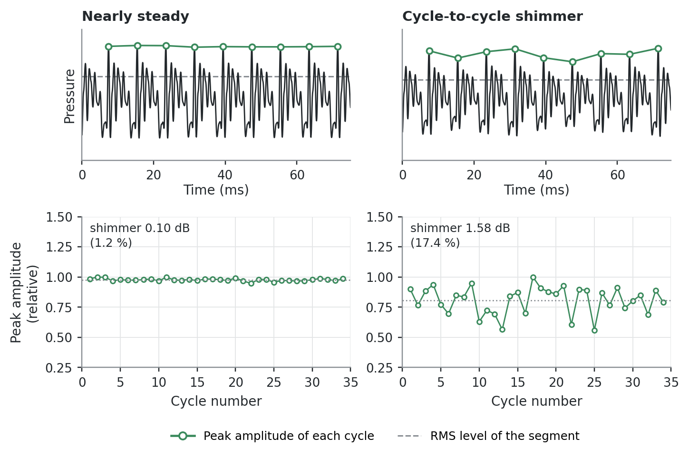

Living draft. This chapter reflects the sources cited below and will be revised as further sources are incorporated. Found an error? Use the Report an issue link in the sidebar.
6.1 Definition
The question shimmer asks is whether each vocal cycle is as large as the one before it. It is the amplitude counterpart of jitter, and like jitter it compares adjacent cycles only.
Measures of amplitude perturbation, generally called shimmer, are analogous to those of frequency perturbation. Shimmer quantifies short-term amplitude instability that does not alter the qualitative features of the vocal waveform (Baken and Orlikoff 2000).
Shimmer is likely at least as important as jitter, and perhaps more so, in its contribution to the perception of hoarseness, although there is no unanimity on this point. Its relationship to specific abnormalities of glottal function, or to more global disorders of speech, remains at the very best extremely unclear. What does seem clear is that shimmer values tend to normalise as laryngeal pathology abates (Baken and Orlikoff 2000).
Shimmer has not been as carefully studied as jitter. The effects of fundamental frequency, frequency perturbation and mean amplitude on it remain incompletely characterised, and possible differences due to age and sex await clarification. As with frequency perturbation, the relationship between shimmer magnitude and vocal pathology is very murky. Shimmer measures nonetheless remain popular among clinicians, in part because they are included in most automated voice analysis systems, which make them easy to obtain (Baken and Orlikoff 2000).
Figure 6.1 shows the same vowel with and without it, and marks the quantity the measure is actually built from.
Show the code for this figure
fs, f0, ncyc =16000, 125.0, 34T0 =1.0/ f0rng = np.random.default_rng(11)per = np.full(ncyc, T0) # periods held constant throughoutsteady =1+0.01* rng.standard_normal(ncyc)shim =1+0.16* rng.standard_normal(ncyc)cases = [("Nearly steady", steady), ("Cycle-to-cycle shimmer", shim)]def peaks_per_cycle(x, per, fs):"""Peak amplitude of each cycle, and when it occurs, as a program would.""" b = np.cumsum(np.concatenate([[0.0], per])) vals, times = [], []for i inrange(len(per)): s, e =int(b[i] * fs), int(b[i +1] * fs)if e <=len(x) and e > s: k =int(np.argmax(x[s:e])) vals.append(x[s + k]); times.append((s + k) / fs)return np.array(vals), np.array(times)fig, axes = plt.subplots(2, 2, figsize=(6.6, 4.3), gridspec_kw={"height_ratios": [1.0, 1.15]})show_s =0.075for j, (name, amp) inenumerate(cases): x = vs.synth_vowel(per, amp, fs, noise_rel_db=-38, seed=3) t = np.arange(len(x)) / fs pk, pkt = peaks_per_cycle(x, per, fs) b = np.cumsum(np.concatenate([[0.0], per])) ax = axes[0, j] m = t <= show_s ax.plot(t[m] *1e3, x[m], color=vs.INK, lw=0.9) cm = pkt <= show_s ax.plot(pkt[cm] *1e3, pk[cm], marker="o", ms=4, lw=1.1, color=vs.GREEN, mfc="white", mec=vs.GREEN, mew=1.2, zorder=3, label="Peak of each cycle") rms = np.sqrt(np.mean(x[m] **2)) ax.axhline(rms, color=vs.MUTED, lw=1.0, ls="--", zorder=1, label="RMS level") ax.set_title(name, color=vs.INK) ax.set_ylim(-1.15, 1.3); ax.set_yticks([]) ax.set_xlim(0, show_s *1e3) ax.set_xlabel("Time (ms)", labelpad=1)if j ==0: ax.set_ylabel("Pressure") vs.style_axes(ax); ax.grid(False) ax = axes[1, j] ax.plot(np.arange(len(pk)) +1, pk, marker="o", ms=3.2, lw=0.9, color=vs.GREEN, mfc="white", mec=vs.GREEN, mew=1.0) ax.axhline(np.mean(pk), color=vs.MUTED, lw=0.9, ls=":") ax.set_ylim(0.25, 1.5); ax.set_xlim(0, ncyc +1) ax.set_xlabel("Cycle number")if j ==0: ax.set_ylabel("Peak amplitude\n(relative)") vs.style_axes(ax) sh_db =20* np.mean(np.abs(np.diff(20* np.log10(pk))))/20*20# mean |ΔdB| sh_db = np.mean(np.abs(np.diff(20* np.log10(pk)))) sh_pct =100* np.mean(np.abs(np.diff(pk))) / np.mean(pk) ax.text(0.03, 0.96, f"shimmer {sh_db:.2f} dB\n({sh_pct:.1f} %)", transform=ax.transAxes, ha="left", va="top", fontsize=8, color=vs.INK, linespacing=1.35)handles = [ plt.Line2D([], [], marker="o", color=vs.GREEN, mfc="white", mec=vs.GREEN, mew=1.2, ms=5, label="Peak amplitude of each cycle"), plt.Line2D([], [], color=vs.MUTED, ls="--", lw=1.0, label="RMS level of the segment"),]fig.legend(handles=handles, loc="lower center", ncol=2, frameon=False, fontsize=8, bbox_to_anchor=(0.55, -0.02))fig.tight_layout(rect=(0, 0.045, 1, 1))plt.show()

Figure 6.1: Two synthetic vowels with identical periods throughout, differing only in the amplitude of successive cycles. Top: the waveform, with the peak of each cycle marked and the RMS level of the whole segment dashed. Shimmer is computed from the per-cycle peak, not from the RMS, and the two must not be confused. Bottom: the peak amplitude of each cycle. The right-hand voice measures 1.58 dB, about 17 %, against 0.10 dB for the left. Signals are synthetic and illustrative.
6.2 Computation
Amplitude perturbation is based on the peak amplitude of the acoustic wave associated with each phonatory cycle. This is a different value from the rms or average amplitude normally used as the basis of sound pressure level, and the two must not be confused. Without a very elaborate and highly impractical evaluation of the complex vowel waveform, there is no way to convert average peak amplitude to a different intensity measure (Baken and Orlikoff 2000).
Shimmer is reported either in decibels or, normalised against mean amplitude, as a percentage. The amplitude perturbation quotient (APQ) applies a moving average to remove the effect of long-term amplitude drift, which is not the quantity of interest but which inflates the measured value. Published APQ data use different smoothing widths, five-point and eleven-point among them (Baken and Orlikoff 2000).
6.3 Normative data
This reference publishes no shimmer cutoff.
No source reviewed here states a Praat version and settings for a shimmer reference value. Under the rule in Pipeline Dependence and Reference Values, an algorithm-defined measure can be compared with a reference only when the reference states the same algorithm, settings, software version and task. No published shimmer reference meets that test against a Praat-based pipeline.
Table 6.1: Shimmer reference values for a Praat-based pipeline.
Population
Task
Pipeline
Cutoff
Class
Any, measured in Praat
Sustained /a/
—
No published reference
—
The values below come from other pipelines and are shown for context only.
Table 6.2: Shimmer values from other pipelines, for context only. Source: Baken and Orlikoff (2000).
Measure
Population
Task
Value
Pipeline
Class
Shimmer in dB
31 men, 18–38 y (mean 26.6)
Sustained vowels of 5 s at 70–80 dB SPL, F0 held to ±10 Hz; 3-second segment of the least variable of 3 trials
The same source reports pathological APQ values of 16.7 × 10⁻⁴ in two women with chronic laryngitis, 41.0 × 10⁻⁴ in two men with nodules, 111.3 × 10⁻⁴ in two men with unilateral paralysis, and 120.1 × 10⁻⁴ in one man with a tumour (Baken and Orlikoff 2000). These are not a contrast with the rows above and must not be read as one. Every pathological row in the source table carries the five-point inverse-filtering note, where the normal acoustic rows carry the eleven-point note, and the table states no signal type for the pathological block (Baken and Orlikoff 2000). The values do not separate cleanly either: chronic laryngitis at 16.7 × 10⁻⁴ falls below both normal means, and nodules at 41.0 × 10⁻⁴ sits on the normal male mean of 40.3 × 10⁻⁴. Only paralysis and tumour stand clear of the normal range, at roughly three times the normal male mean, and every row rests on one or two speakers.
NoteErratum, v0.3.0
Before v0.3.0 this paragraph labelled the pathological values as acoustic-signal measurements and stated that their separation from the normal values was large. Both were wrong: the source attributes every pathological row to the inverse-filtering note, and two of the four values fall at or below the normal means. See the release notes.
6.4 What it captures
Shimmer appears to be inversely, though nonlinearly, proportional to mean vocal intensity, and shimmer and jitter tend to covary (Baken and Orlikoff 2000). The loudness effect is visible in Table 6.2: mean shimmer falls from 0.37 dB to 0.21 dB as baseline level rises from about 63 to about 85 dB SPL, and the difference between the soft and loud conditions is significant (Baken and Orlikoff 2000).
Vowels differ. In the normative series, /a/ gives significantly higher shimmer than /i/ and /u/ in both sexes, and men and women differ significantly for /i/ and /u/ but not for /a/ (Baken and Orlikoff 2000).
Clinically, shimmer rises in conditions that reduce glottal resistance — vocal fold paralysis is the paradigmatic case, and glottal gaps of any kind also raise it — and with mass lesions or diffuse oedema of the folds (Behlau, n.d.). Perceptually it correlates with noise, reported as rouquidão (hoarseness), and with soprosidade (breathiness) (Behlau, n.d.); the independent judgement in the English textbook is that shimmer contributes at least as much as jitter to perceived hoarseness (Baken and Orlikoff 2000). It is less directly tied to specific dysphonia categories than jitter: it moves in more clinical situations but is a weaker classifier on its own (Behlau, n.d.).
6.5 Confounds and cautions
Accuracy is limited first by bit resolution. The accuracy of an amplitude perturbation measure can be no better than the precision of the peak amplitude values it is computed from, and the most important limiting factor is the bit resolution of the analog-to-digital converter (Baken and Orlikoff 2000).
Microphone. Shimmer measurement clearly requires a high-quality air microphone (Baken and Orlikoff 2000).
Recording, carried over from the jitter literature. Analog tape recorders add frequency and amplitude variation of their own, which tends to inflate perturbation measures. The source restricts its recommendation to samples for jitter analysis, and offers two alternatives without ranking them: a digital audio tape recorder, which adds significantly less, or acquiring the sample through the A/D system directly (Baken and Orlikoff 2000). Applying this to shimmer is reasonable, since the same recorders vary amplitude as well as frequency, but no source reviewed states it for shimmer.
Unit ambiguity. Percent shimmer and shimmer in decibels are different quantities with different definitions, and systems differ in which they report and how they compute it. Across four systems compared directly, one system’s shimmer is based on a relative average perturbation while a hand-marking system follows a decibel definition (Bielamowicz et al. 1996). A bare percentage names neither the unit’s definition nor the program.
System dependence. Under standardized recording and analysis procedures across three systems, amplitude perturbation measurements did not agree (Karnell et al. 1995), and across four systems the rank-order correlations between similar perturbation measures were poor (Bielamowicz et al. 1996). The comparisons are set out in Pipeline Dependence and Reference Values.
Aperiodicity defeats the measure. Measures of aperiodicity apparently cannot be reliably applied to voices that are even mildly aperiodic (Bielamowicz et al. 1996). As with jitter, reliable numerical shimmer requires a Type 1 signal (Titze 1995).
Electroglottographic shimmer is not acoustic shimmer. Because EGG amplitude reflects contact area rather than acoustic signal amplitude, shimmer from an EGG waveform cannot be substituted for or compared with acoustic shimmer (Behlau, n.d.).
6.6 Points of disagreement
Bit depth. The sources set different minima, and the gap is wide. The Behlau chapter gives a minimum of 16 bits for the analog-to-digital card (Behlau, n.d.). Baken and Orlikoff treat bit resolution as the most important factor limiting shimmer accuracy, and state that 10 bits should be considered a minimum (Baken and Orlikoff 2000). A measurement made near the lower bound of either recommendation should be reported with its bit depth.
The 3 per cent limit has no traceable pipeline. It is given as an upper limit of normality for relative measures, and the page names a program — Dr. Speech, which uses shimmer APQ — and fixes the unit as a percentage (Behlau, n.d.). What it does not give is a version or settings, which is the ground on which it is excluded here, so it is not listed as a reference value above. The comparable figure from an English source — a 95 per cent critical region above 0.98 dB — is in decibels, is on a stated task, applies to the 31-man sample alone and not to the women, and is not interchangeable with a percentage (Baken and Orlikoff 2000).
PhonaLab is developed by the author of this reference; see Competing interests.
PhonaLab reports shimmer with its algorithm, settings and task stated alongside the value, and in a named unit. It deliberately shows no normal band and no severity band for shimmer, because no published reference value is compatible with its pipeline — see Table 6.1.
Baken, Ronald J., and Robert F. Orlikoff. 2000. Clinical Measurement of Speech and Voice. 2nd ed. Singular Thomson Learning.
Behlau, Mara. n.d. Voz: O Livro Do Especialista. Editora Revinter.
Bielamowicz, Steven, Jody Kreiman, Bruce R. Gerratt, Marc S. Dauer, and Gerald S. Berke. 1996. “Comparison of Voice Analysis Systems for Perturbation Measurement.”Journal of Speech and Hearing Research 39 (1): 126–34. https://doi.org/10.1044/jshr.3901.126.
Karnell, Michael P., Kelly Dailey Hall, and Karen L. Landahl. 1995. “Comparison of Fundamental Frequency and Perturbation Measurements Among Three Analysis Systems.”Journal of Voice 9 (4): 383–93. https://doi.org/10.1016/S0892-1997(05)80200-0.
Titze, Ingo R. 1995. Workshop on AcousticVoiceAnalysis: Summary Statement. National Center for Voice; Speech.